Primary Source


Secondary Source
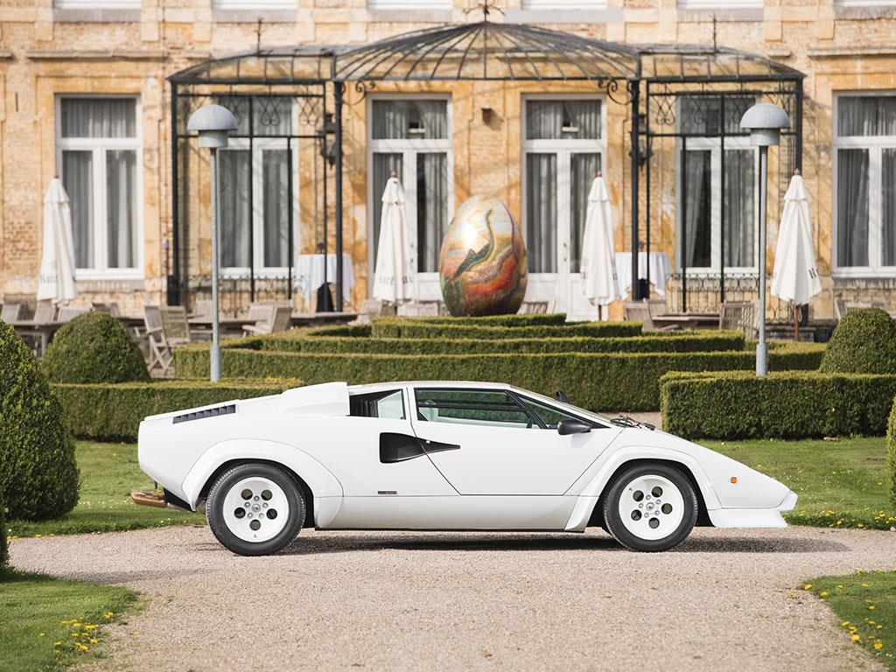
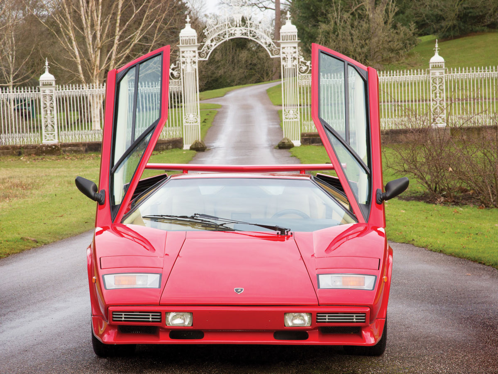
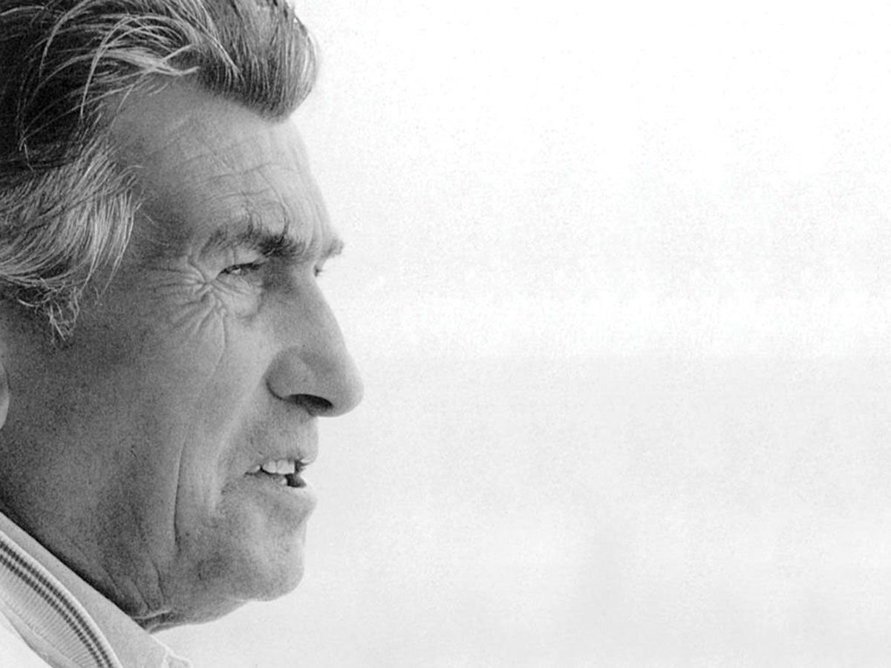
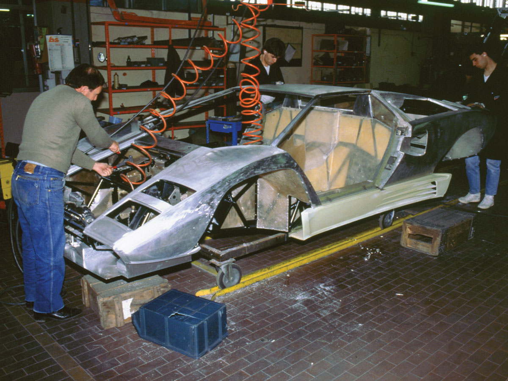
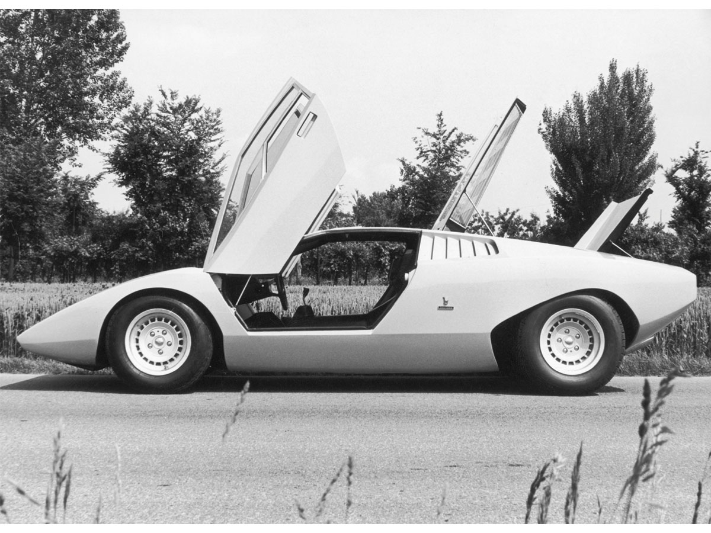
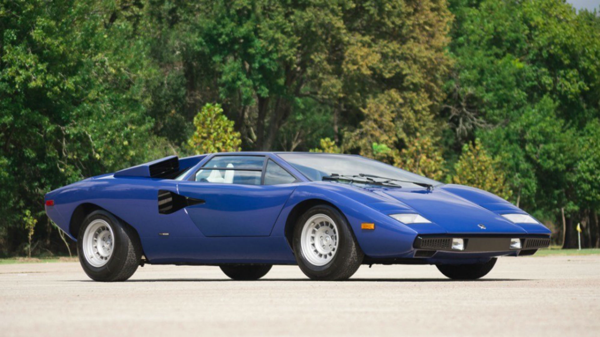
Magazine and Press Coverage

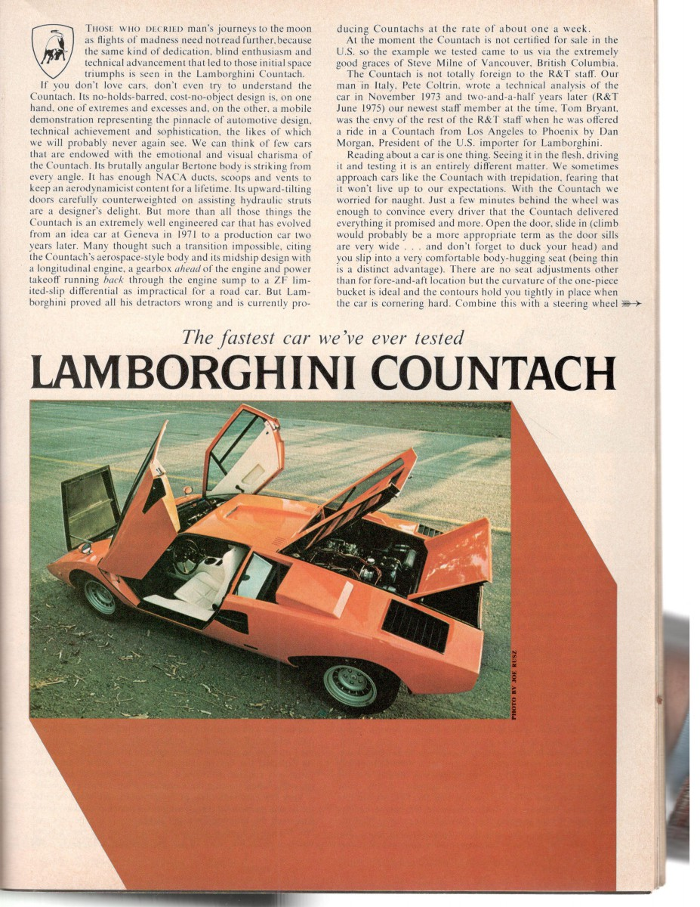

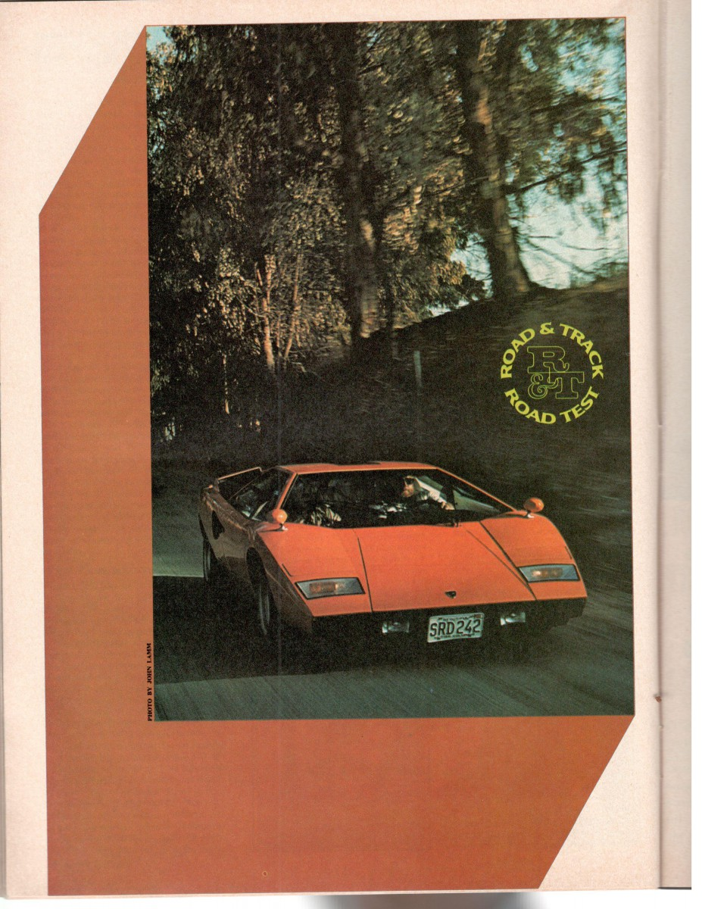


Designers, Builders, and Owners


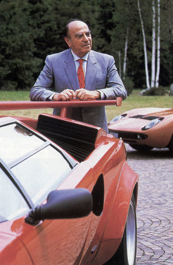
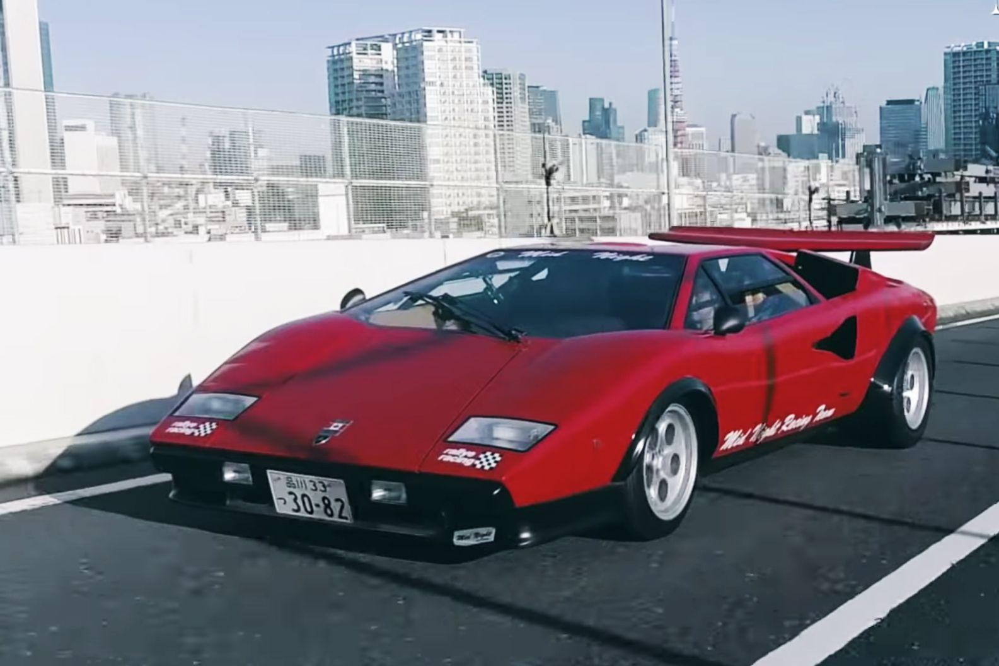


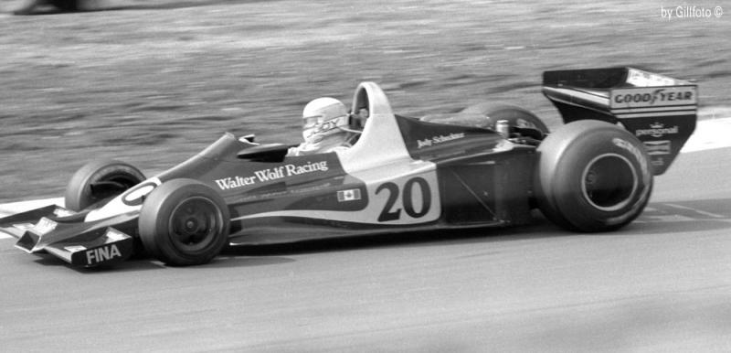
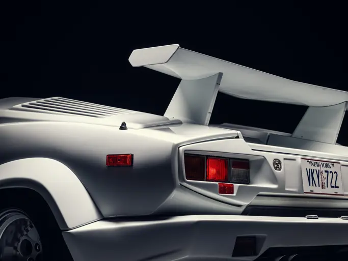
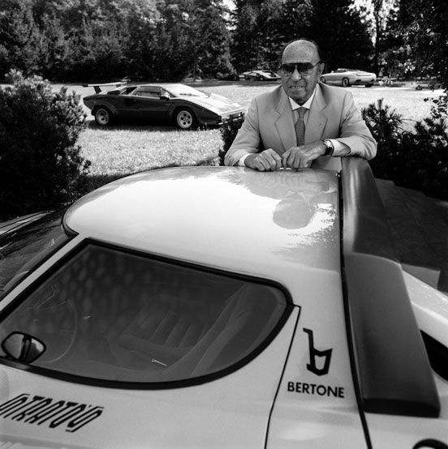
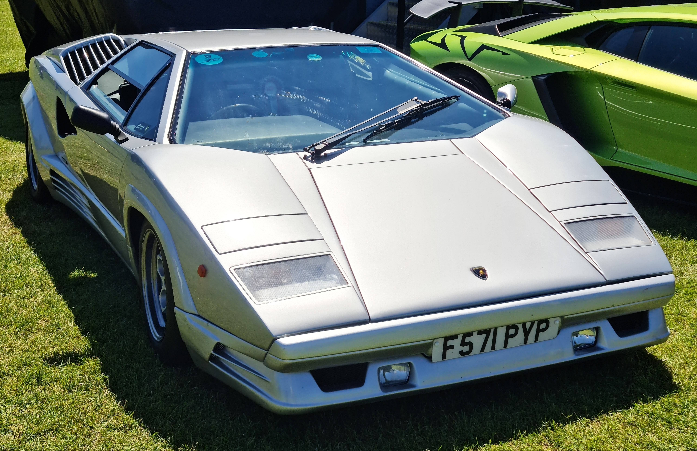
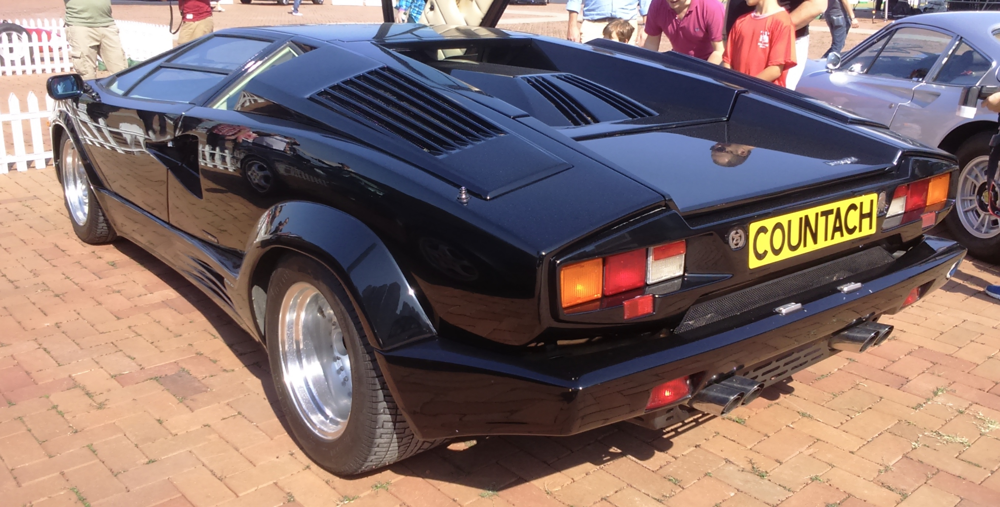
Design and Engineering

Source: see citation
Launch and Motor Shows


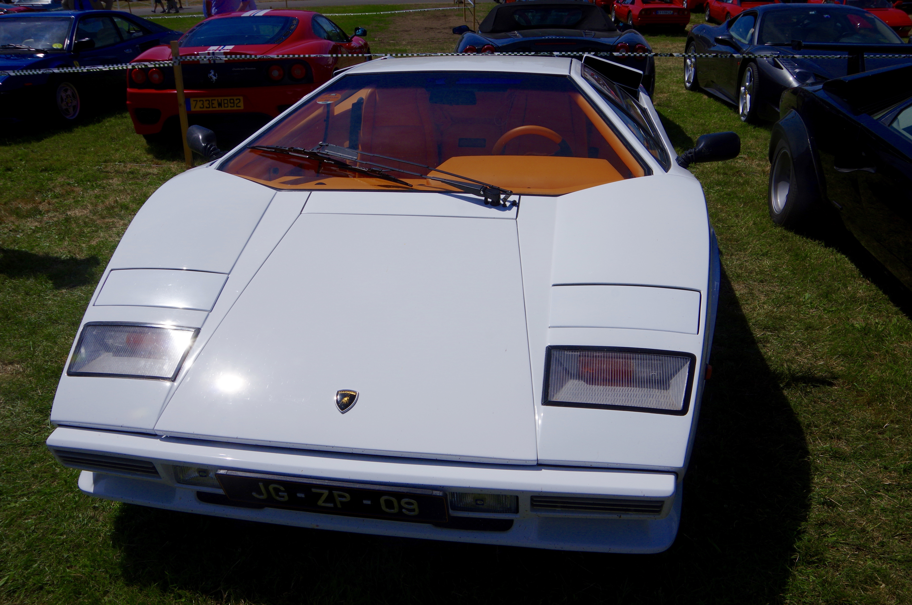
Notes
- Road & Track. "Lamborghini Countach Road Test." Road & Track, February 1976.
- Road & Track. "Lamborghini Countach Road Test." Road & Track, February 1976. Page scan via Curbside Classic. https://www.curbsideclassic.com/vintage-reviews/road-track-vintage-road-test-1976-lamborghini-countach-fastest-car-weve-ever-tested/.
- Ibid.
- Perkins, Chris. "5 Things You Didn't Know About the Lamborghini Countach." The Drive, September 19, 2016.
- Ibid.
- Ibid.
- Ibid.
- Ibid.
- The Drive. 1976 Lamborghini Countach LP400 Periscopica. Photograph. September 19, 2016.
- Road & Track, "Lamborghini Countach Road Test," Feb. 1976.
- Ibid.
- Pirelli. Countach Top View Poster. Print advertisement. April 1986. Wikimedia Commons. https://commons.wikimedia.org/wiki/File:1986_Pirelli_Countach_top_view_poster.jpg.
- Road & Track, "Lamborghini Countach Road Test," Road & Track, February 1976, page scan via Curbside Classic, https://www.curbsideclassic.com/vintage-reviews/road-track-vintage-road-test-1976-lamborghini-countach-fastest-car-weve-ever-tested/.
- Road & Track, "Lamborghini Countach Road Test," Road & Track, February 1976, page 2, scan via Curbside Classic.
- Pirelli, Countach Top View Poster, April 1986, Wikimedia Commons (Public Domain).
- Lamborghini / Walter Wolf archive. Walter Wolf with Countach LP400 Speciale. Photograph. c. 1976. Via LamboCars. https://www.lambocars.com/walter-wolf-specials/.
- RM Sotheby's. 1989 Lamborghini Countach 25th Anniversary from The Wolf of Wall Street. Auction catalog photograph. December 2023. https://rmsothebys.com/media-center/press-releases/one-of-two-the-wolf-of-wall-street-lamborghini-countachs-comes-to-market-iconic-wall-street-raging-bull-headlines-rm-sothebys-upcoming-new-york-sale/.
- Unknown photographer. Marcello Gandini in 1976. Photograph. 1976. Wikimedia Commons. https://commons.wikimedia.org/wiki/File:Marcello_Gandini_in_1976.jpg.
- Alexander, Jesse. Nuccio Bertone with the Stratos and Countach. Photograph. c. 1974. Wikimedia Commons. https://commons.wikimedia.org/wiki/File:1970s_Nuccio_Bertone_Stratos_and_Countach.jpg.
- Unknown photographer. Nuccio Bertone with the Countach and Miura. Photograph. c. 1985. Wikimedia Commons. https://commons.wikimedia.org/wiki/File:1980s_Nuccio_Bertone,_Countach_and_Miura.jpg.
- Lamborghini / Walter Wolf archive, "Walter Wolf with Countach LP400 Speciale," c. 1976, via LamboCars.com.
- contri, Lamborghini WOLF Countach, 2012, Wikimedia Commons, CC BY-SA 2.0.
- Ibid.
- Gillfoto, Jody Scheckter in the Walter Wolf F1 at Brands Hatch, 1977, Wikimedia Commons, CC BY-SA 3.0.
- RM Sotheby's, 1989 Lamborghini Countach 25th Anniversary from The Wolf of Wall Street, December 2023 auction catalog.
- Unknown photographer, Marcello Gandini in 1976, 1976, Wikimedia Commons (Public Domain).
- Jesse Alexander, Nuccio Bertone with the Stratos and Countach, c. 1974, Wikimedia Commons (Public Domain).
- MrWalkr, 1988 Lamborghini Countach 25th Anniversary Silver, 2021, Wikimedia Commons, CC BY-SA 4.0.
- Jones028, 1988 Lamborghini Countach 25th Anniversary Edition, Hong Kong, 2014, Wikimedia Commons, CC BY 2.0.
- Hamster, Dave. Lamborghini Countach LP500 Prototype. Photograph. 2016. Wikimedia Commons. CC BY 2.0. https://commons.wikimedia.org/wiki/File:1982_Lamborghini_Countach_LP500.jpg.
- Getty Images. "Lamborghini Countach Under Construction." Getty Images Editorial, image #534251462. https://www.gettyimages.com/detail/news-photo/lamborghini-countach-under-construction-1988-2000-news-photo/534251462.
- Calreyn88. 1975 Lamborghini Countach LP400 Periscopo. Photograph. 2024. Wikimedia Commons. CC BY-SA 4.0. https://commons.wikimedia.org/wiki/File:1975_Lamborghini_Countach_LP400_Periscopo_2.jpg.
- MrWalkr. 1976 Lamborghini Countach LP400 Periscopio. Photograph. 2022. Wikimedia Commons. CC BY-SA 4.0. https://commons.wikimedia.org/wiki/File:1976_Lamborghini_Countach_LP400_Periscopio.jpg.
- Kumar, Ank. 1974 Lamborghini Countach LP400 at Grand Basel. Photograph. 2018. Wikimedia Commons. CC BY-SA 4.0. https://commons.wikimedia.org/wiki/File:1974_Lamborghini_Countach_LP400_at_Grand_basel_2018_(Ank_Kumar)_01.jpg.
- Dave Hamster, Lamborghini Countach LP500 Prototype, 2016, Wikimedia Commons, CC BY 2.0.